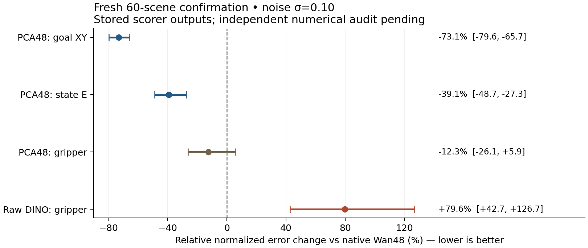
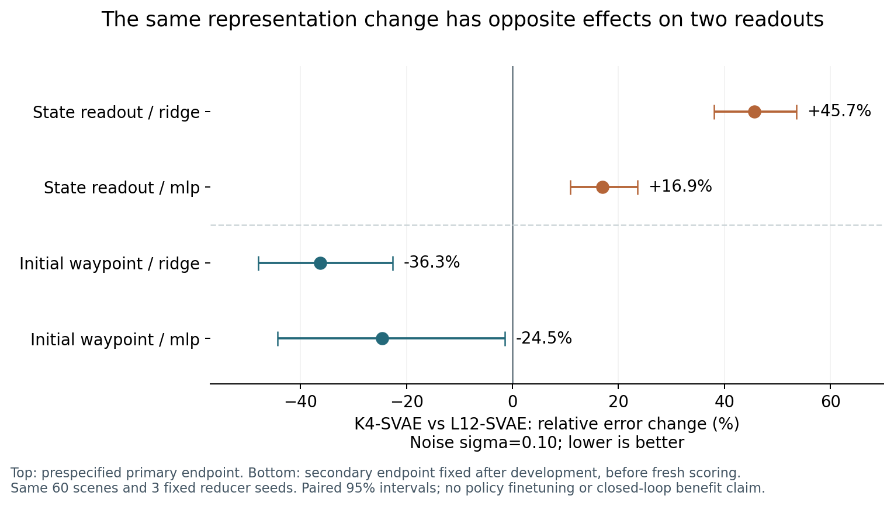
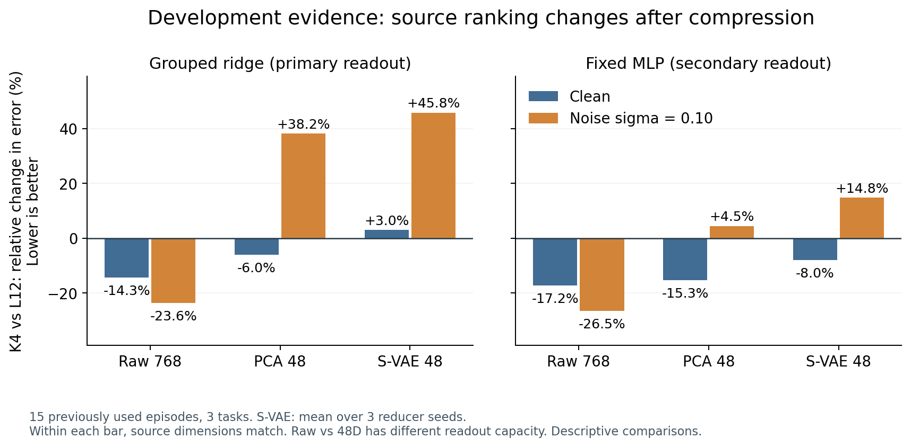

OPENWAM · REPRESENTATION STUDY · 2026-09-22
什么表征更适合控制：收益与抓手取舍
当前新增像素VAE对照、分布偏移诊断与相同噪声训练控制。全部正负结果与较早的层级比较均保留，离线读出不等于闭环策略收益。
本地报告更新：2026-09-23T01:19:04.719517-05:00。原公网报告站点当前无法更新，不能把其旧页面视为当前状态。
新60场景评分完成 · 独立审计待完成
计算于9月23日12:20完成，早于15:38截止时间。三任务各20个有效场景，共保留78次尝试；采集与评分均退出0。四张卡已释放。此处是已保存评分结果，独立数值审计尚未执行，不能标记为已审计结论。
| PCA48 相对 Wan48（噪声0.10） | 误差变化 | 场景配对95%区间 |
|---|
| 初始目标XY | −73.05% | [−79.60%, −65.72%] |
| 短期状态E | −39.11% | [−48.70%, −27.30%] |
| 平移分量 | −40.13% | [−49.87%, −27.76%] |
| 夹爪分量 | −12.33% | [−26.12%, +5.91%] |
冻结评分程序标记两个预设主指标通过，但夹爪区间跨零，不能声称可靠改善或非劣。原始DINO的夹爪误差反而增加79.65%（区间[42.65%,126.73%]），尽管总体状态误差更低。PCA、SVAE与Wan均为192维池化读出输入，原始DINO为3072维。

全部路线、干净与噪声条件
检查与限制：原生规划器、场景来源和原定硬件容差检查通过；370个冻结文件校验一致。L40S上的Wan数值偏差、rainier的Python启动失败均已保留。私有兼容库修复后，A40上的Wan与参考完全相同，DINO最大标准化RMS0.04597满足原定0.05容差。模型、读出与实验规则未改。
12:08的记录写入因自动审批服务额度耗尽而未执行，15:49访问恢复；后台计算已按界限完成。未在截止后重启实验或跳过审计脚本的时间限制。下一步是有界CPU独立审计，再整理最小可复现贡献。尚无完整RAE、真实接触或闭环策略收益结论。
网页状态：15:51公网服务仍返回项目不存在（404）；本地报告已更新。
全部保存结果 · 保存预测 · 结论与限制 · 冻结方案 · 终态 · A40一致性
12小时窗口已结束 · 01:15:12 CDT
原定截止时间保持不变，最后一项实验已于00:24完成。此后仅核查、归档与尝试更新报告，没有延长实验预算。
本轮结果不统一：原先层级比较的主候选失败；目标辅助分支停在56/60、未评分。新增相同噪声训练对照支持继续研究紧凑语义表征，但抓手收益和闭环策略提升仍未证实，完整RAE也尚未复现。全部正负结果保留在下方。
下一步独立60场景验证草案已准备，预计约3小时，需要新的固定实验预算后才能启动。此次没有开始采集、改用较小样本或继续已过期分支。
完整收尾说明 · 窗口关闭记录 · 下一轮验证草案
01:17公网更新再次失败：Sites project not found。本页为本地归档，未声称上线。
短时状态验证：压缩语义表征有优势，但抓手收益尚不确定
00:24 CDT 完成：105个训练场景，每场景12帧，所有表征使用相同干净／噪声混合训练。42组线性拟合、63组预测通过独立核查；复用已有评测特征，仅新增6,930张训练噪声图像的编码。
短时状态 E 是位移与抓手两组归一化均方误差的平均，越低越好。以下均为相同噪声训练后的结果；60个评测场景已暴露，属于探索性证据。没有完成完整 RAE 或证明闭环策略收益。
同为192维池化视觉输入，PCA48在强噪声下的总状态误差比原生Wan低43.9%，比仅用机器人自身状态低50.2%。它与SVAE的状态、目标读出均有较好结果，目前没有证据表明必须使用学习式压缩。
平均分会掩盖取舍：原始DINO的位移和总误差最低，抓手误差却比Wan高63.9%，三个任务都退化。PCA/SVAE的抓手点估计较好，但描述性95%区间仍跨过零；PCA相对Wan为−25.1%至+9.8%。因此不能声称抓手稳定改善或各控制分量全面提升。相对仅自身状态，PCA在adjust_bottle抓手上仍退化3.6%。
Wan经过噪声训练也从37.34降至0.3087，干净误差则增加约5.7%。保留这些负结果，避免把读出器分布偏移误认为不可恢复的信息损失。
下一步解决的疑问：紧凑语义特征的位移优势、抓手取舍能否在新场景重现？应固定新场景协议后独立验证，再考虑匹配的世界／动作模型训练。实验窗口现已结束；此前剩余时间不足以完成实测约94分钟的60场景采集，本轮未缩小样本或延长截止时间。
完整解释与限制 · 下一轮独立验证草案（未启动） · 最小文档修复 · 所有任务与条件 · 位移／抓手与自身状态对照 · 固定方案 · 独立核查 · 补充汇总的舍入诊断
公网发布仍被 Sites project not found 阻断；此更新只保存为本地网页，未声称上线。
相同噪声训练后，DINO 的目标读出优势仍存在
00:05 CDT 完成：相同105个训练场景、相同噪声、按场景划分的交叉验证，冻结编码器与压缩器，只训练21个线性读出器。735份训练输入来自105个场景，不算735个独立样本。按原场景数校正正则化强度，避免重复样本数改变比较。
以下是初始图像到专家首次闭合抓手位置的 XY 误差，越小越好。箭头：仅干净训练 → 加入相同噪声训练。使用原有60个已暴露场景，属于探索性结果；不是完整 RAE 或闭环机器人提升。
Wan 的强噪声误差从182.63降至0.4148，说明之前的巨大差距不能直接解释为信息丢失。干净性能同时出现退化，已完整保留。公平增强之后，DINO 三条路线的强噪声误差仍约0.111–0.116，三个任务方向一致。
在同为192维的读出输入下，PCA48相对原生Wan48误差降低73.3%，描述性配对95%区间为62.3%–82.5%；逐token LN的Wan对照也保留。PCA与SVAE数值接近，目前没有证明学习式压缩必不可少。
21组拟合和63组预测通过独立数值核查。跨设备训练帧检查中，DINO存在最大约0.046个训练标准差的均方根差异，低于预设门槛，但不是逐位相同。所有归一化、增强与模型选择仅使用训练数据。
后续更新：短时状态控制已完成，见页面顶部。抓手收益仍不确定；尚无接触建模或策略成功率提升证据。
解释与限制 · 全部任务、条件与区间 · 预先固定方案 · 独立数值核查 · 跨设备检查
公网更新仍失败：Sites project not found。此版本仅在本地报告。
新增：像素 VAE 与 DINO 表征的配对读出对照
完成于 23:52 CDT。105 个训练场景、原有 60 个评测场景；新增 18 个 Wan 线性读出器，DINO 结果直接复用。全部场景、噪声条件及两种 Wan 归一化均保留。独立数值审计通过，GPU 作业已结束。
这是在已看过的 60 个场景上追加的探索性对照。不是新的独立确认、完整 RAE 复现或闭环策略提升。误差越小越好。
DINO 路线在当前读出设置下更抗噪。PCA48 与 SVAE48 的短时状态误差接近，原始 DINO 的目标读出更好，说明压缩有任务相关的取舍。
暂不把巨大相对差距宣传为 RAE 收益。已保存特征的事后诊断发现：Wan 加噪后偏离训练分布，噪声造成的输出变化中约 96.7–99.93% 的能量表现为任务内共同偏移；这不是总预测误差的解释比例，也不证明信息不可恢复。下一步须补相同训练噪声增强的读出控制，区分信息保留与读出器分布偏移，所有校准只使用训练集。
DINO 路径目前没有像素解码器，不能称为完整 RAE。Wan 接口检查已验证尺寸、首帧因果性与像素解码；没有重新运行旧80次策略评测，也没有评分未完成的56/60场景。
解释与限制 · 全部结果及描述性区间 · 预先固定方案 · 独立数值检查 · 全部偏移诊断 · 接口预检
公网发布仍失败：Sites project not found。此更新目前只在本地网页。
目标辅助监督：确认性评测未完成
终止核查：2026-09-22T19:17:48.667533-05:00。采集在原定 19:15:55（CDT）截止，最终保留 56/60 个有效场景：adjust_bottle 20、handover_block 20、place_object_basket 16。
70 个不同候选已开始，其中 69 个完整结束：56 个有效、3 个不稳定、10 个专家不可行。最后一个候选因时间预算到期中断，工作进程退出码 124，采集父进程退出码 1。GPU 已释放，全部失败与日志保留。
辅助监督是否改善表征，目前没有结论。六个等预算配对模型和训练集读出器均已完成并通过独立检查；新确认队列没有进入评分。按冻结协议，任一任务不足 20 个有效场景即标记未完成，不能用部分样本替代确认性结果，也不能延长本轮采集。
56 个有效文件的哈希、原生规划与回放记录、实际规划器和渲染设备、连续种子顺序及截止前完成时间均通过归档检查。该检查没有计算模型分数，也不替代尚未执行的跨队列数据身份和零噪声预测一致性检查。
较早的层级比较仍显示“目标位置读出改善、短期状态抗噪退化”的权衡；它不是本轮辅助监督的验证。小范围可交付项是可选样本来源记录补丁，以及保留全部正负结果的评测材料。后续科学试验需要独立预先固定方案，不能把此次未完成结果改写为收益。
终止状态 · 归档检查 · 完整说明 · 贡献与证据边界 · 原冻结协议 · 训练读出检查
归档补记：最初的文本传输规范化了七份进度条日志的回车符，现已补存逐字节一致的原始日志；数据、结果与截止时间均未改变。
已保留的采集修复与失败
复制环境的资产路径修复，以及同一原生空抓取哨兵在三个明确调用点的分类修复，均在续跑前记录。原始失败保留，未知错误仍停止；没有重跑已完成候选或改动数值评分标准。
资产路径修复 · 首次空抓取分类 · 原生逻辑检查 · 初版分类器 · 调用点修复 · 调用点检查 · 最终分类器
本次公网发布查询仍返回 Sites 项目不存在（404）；此更新已保存在本地网页，公网版本尚未更新。
开发集主假设未得到支持。噪声下 K4-S-VAE 的均衡误差比 L12-S-VAE 更高：Ridge +45.77%，MLP +14.79%。新轨迹评分完成，独立审计通过。
新轨迹确认
60 条新任务内专家可行轨迹，720 个采样点；各压缩种子、噪声副本和帧先在轨迹内平均，不计为独立样本。没有重新拟合。
主读出噪声 E 变化 +45.67%，95% 配对区间 +38.02% 至 +53.59%；干净 E 变化 +1.78%。固定 MLP 噪声 E 变化 +16.93%。
预设主收益标准：未达到。离线读出不等于策略闭环收益。
全部条件及逐轨迹数据 · 独立审计 · 原始预测 · 标签与训练尺度 · 仅依赖 NumPy 的统计复算脚本
同一改变，对两类信息产生相反效果

主评测没有通过预设收益标准。同样的 K4-S-VAE，在初始目标位置这个补充问题上则显示改善：噪声条件 Ridge 误差变化 -36.26%，95% 区间 [-48.00%, -22.57%]；固定 MLP 为 -24.54%。干净输入分别为 -26.17% 和 -29.51%。
这个补充诊断在看过开发集、本轮新轨迹评分之前固定。105 条训练轨迹的初始本体状态在各任务内相同；输入仅为初始 head 图像，标签是首次夹爪从 >0.5 降至 ≤0.5 时对应末端的 XY 位置。它是专家事件位置，不能当作物体真值或接触传感标签。
每任务仅 35 条训练图像；三个来源、PCA/S-VAE/原始特征、全部种子均保留。常数训练均值基线 E=1.0207；K4-S-VAE 的 Ridge 噪声 E=0.3833，支持此问题需要视觉信息。独立审计重新读取了 60 个原始事件标签、检查 105 个训练样本、重算 270 个预测条件和 6 个配对区间，均通过。
收益不是所有任务一致。Ridge 的 adjust_bottle 噪声误差略升，MLP 的 handover_block 误差升高；低噪声下 MLP 总体变化区间跨零。这个结果是同一批 60 条轨迹上的次要证据，不能替代失败的主假设，也不是额外一次独立复现。
展开全部来源与压缩矩阵（不挑选最优者作为主结论）
全部目标位置结果 · 原始标签及预测独立审计 · 原始预测 · 标签 · 训练均值与尺度 · NumPy 复算脚本 · PDF 图表
跨相机失败，包含读出器不匹配的影响
已补齐同视角训练基线，全部权重在新轨迹运行前冻结。以 L12-S-VAE / Ridge 为例，head 训练→wrist 测试的 E=2.2597；用相同训练轨迹的 wrist 图像训练同预算读出后，E 降为 0.2446。压缩器始终使用 head 训练版本。
这说明直接跨相机的失败有很大的读出训练域因素；仍有可见性、遮挡和视角内容差异，不能据此证明几何不变性或真实策略适配成功。
全部 90 个相机基线条件 · 夹爪变化阶段与误差分解
已完成的比较
3 项任务，每项 35 条训练轨迹及 5 条曾使用过的开发轨迹。9 个 S-VAE（3 特征来源 × 3 种子）、3 个 PCA、原始特征对照、分组 Ridge 与固定 MLP 均已完成。开发集独立重算了 282 个 Ridge 条件和 192 个 MLP 条件；15 条零噪声路径及固定训练样本的跨机器输出完全一致。
当前新轨迹：{'adjust_bottle': 20, 'handover_block': 20, 'place_object_basket': 20}；共保留 72 次采集尝试。目标为每项任务按连续种子取前 20 条专家可行且完整的轨迹；名单不依据模型表现选择。

负值表示 K4 误差下降，正值表示升高。图为开发集描述性结果；原始特征和压缩特征的读出维度不同，只能在各自相同维度内比较来源。
这个结果能解释什么
原始 768 维中 K4 的总体读出误差较低；使用这套 PCA 或 S-VAE 压到 48 维后，噪声条件下的排序反转。两个读出族方向一致，值得在新轨迹上确认。
噪声误差分解显示，开发集上 K4-S-VAE 的固定读出预测偏移更大。分解使用恒等式 Δ误差 = 偏移² + 2 × 原误差 × 偏移，验证了所有条件。它支持“在短期状态读出上，当前压缩与读出配合更敏感”的描述，尚不能区分压缩目标、优化预算、归一化或读出正则的作用。
一个重要限制：固定 MLP 的仅本体基线，干净 E=0.0351，优于视觉+本体的 L12-S-VAE 0.0637 和 K4-S-VAE 0.0586。因此这些未来状态标签可能主要由本体状态解释；视觉表征排序不能直接等同于控制价值。新确认集 MLP 仅本体 E=0.1170，L12-S-VAE 为 0.1239，K4-S-VAE 为 0.1120；后者的平移读出更好而夹爪误差更高。因此不能把开发集上的本体优势直接推广，也不能由此断言视觉对控制无用。
全部来源都使用同一个预训练骨干。本实验不是 RAE 对像素 VAE 的完整比较，也没有证明信息不可逆丢失。
下一步与决策门槛
- 冻结全部压缩器、读出器和训练尺度。新数据要求与已有轨迹在文件及首帧图像哈希上无重复；这不是对未知预训练语料的排除证明。
- 三任务各 20 条新轨迹全部通过检查后，一次性评估干净、两档噪声和跨相机输入，不进行重新拟合。主比较用任务内轨迹配对重采样；种子和噪声副本不增加独立样本数。
- 主收益要求噪声 E 至少降低 10%、95% 区间支持改善、干净退化上界不超过 3%，并满足逐任务及标签组的限制。
- 开发门槛已失败，因此本轮不启动条件式大模型适配。原生训练的有界测速也未完成计划计时；没有测得两卡完整吞吐，不能据此宣称两卡无法训练。
跨相机比较同时改变可见性和遮挡，不能等同于纯几何不变性。腕部同视角基线已完成配对评估，见独立相机比较附件。夹爪变化分析属于明确标注的补充诊断，不是接触传感标签。旧 80 次闭环未重复，本轮没有新的闭环收益结论。
历史步骤：目标辅助损失的实现检查
2026-09-22：仅在一个原训练样本与固定检查点上做 CPU FP32 检查。
关闭辅助损失时，原损失、随机数状态、80 组参数梯度及一次 AdamW 更新完全一致。
辅助目标能向编码器传递梯度，后续帧变化不影响初始表征，未来输入梯度为零。
首次检查因跨机器数据路径不同而失败，修正路径且保持原图像哈希检查后通过。
该 CPU 检查本身没有保存新训练检查点或测量收益。后续 GPU 检查和六个配对模型训练已完成；独立确认采集最终停在 56/60，详见上方终止记录。
下一轮须同时验证目标信息改善与状态信息保留。
完整检查结果与限制。公网发布再次遇到 Sites 404，当前更新仅在本地报告。
GPU 检查与等预算训练对照
更新：2026-09-22T16:37:38.606396-05:00。GPU BF16 下关闭辅助项的损失、随机数、80 组梯度和一次更新完全一致。
修复不支持确定性反传的自适应池化后，等价分块平均通过数值与梯度检查。原失败保留。
单卡预检每步约 25.4 ms（原目标）与 34.0 ms（辅助目标），仅为驻留特征下的模型计算成本。
等预算对照训练完成：6/6 个模型，两组 × 三个相同种子，各固定续训 2,000 步。独立检查点与采样一致性审计：True。
辅助头使用与评测相同的表征归一化。训练使用原 105 个训练场景，尚未评分新的确认场景。
没有新增收益结论；必须同时满足目标读出改善和状态读出保持。原截止时间不变。
GPU 检查详情 · 冻结的科学协议 · 训练状态
Sites 返回 404，当前更新仅在本地报告，原公网版本未更新。